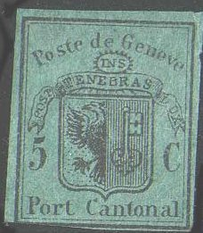
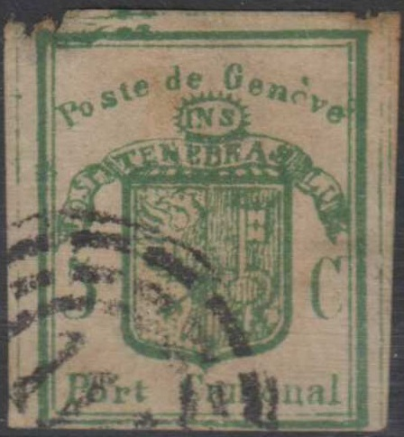
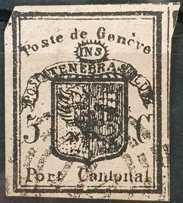
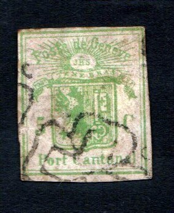
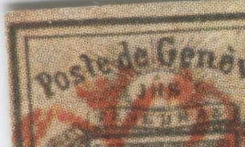
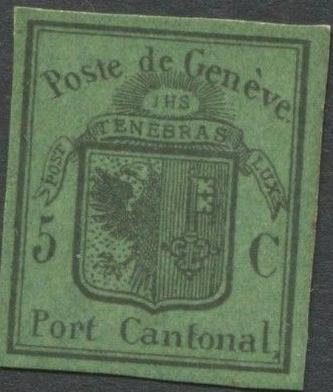

Third forgery of Album Weeds
Return To Catalogue - Geneva forgeries, part 1 - Geneva forgeries, part 2 - Geneva forgeries, part 4 Fournier forgeries of the large stamps - Geneva (Switzerland) - Switzerland overview
Note: on my website many of the
pictures can not be seen! They are of course present in the
catalogue;
contact me if you want to purchase the catalogue.
Many forgeries exist of the stamps of Geneva, in the early 20th century already 15 forgeries of the double stamp and 34(!) forgeries existed imitating the larger stamps and the envelope (according to Album Weeds), they even exist printed on genuine paper obtained from the envelopes.
Geneva forgeries, part 1
Geneva forgeries, part 2
Geneva forgeries, part 4 Fournier
forgeries of the large stamps

Third forgery of Album Weeds
This forgery has inscription "INS" instead of "IHS". There is no accent on the second "e" of "Geneve" and no dot behind this word. The rays that should exist around the letters "INS" are reduced to very short dashes. I have seen this forgery (green colour) cancelled with some black blotches.


Fourth forgery of Album Weeds
This forgery has inscription "INS" instead of "IHS". It also has "FIST" instead of "POST" in its inscription. The rays around "INS" are quite small compared to a genuine stamp. The scroll with "FIST" almost touches the left hand inner frame line. There seem to be several types of this forgery (described as forgery five and six in Album Weeds): in forgery five the rays are longer than in this forgery. In forgery six "INS" has been changed to "IHS" and the rays are also longer.


Fifth and sixth forgeries(?) of Album weeds, with sunrays behind
"Poste de Geneve". They are all slightly different from
the above stamps, but have the inscription "FIST".

Seventh forgery of Album Weeds
 


Inscription "Poste de Geneve" very small, inscription
"INS", right stamps are black on lilac(!)
The above forgery has the inscription "INS" instead of "IHS". The text "Poste de Geneve" is smaller than "TENEBRAS" (it should be the other way around). The rays around "INS" are reduced to very short dashes. There is no dot behind "Cantonal". I don't think the cancels on these stamps were ever used on any genuine Geneva stamp (a "114" in 4 circles and other cancels).
In this forgery the word "de" is exactly in the middle between "Poste" and "Geneve" (it should be closer to "Geneve"). This forgery exists in the wrong colour (green instead of black on green).


Eight forgery of Album Weeds


These forgeries are similar in design, note the strange foot of
the eagle, which has only three claws. The wing touches the upper
part of the shield and has 11 feathers.


Fourteenth forgery of Album Weeds
The above forgery could very well be the fourteenth forgery described in Album Weeds; it is supposed to imitate the small eagle stamp. There is no dot anywhere behind the words or value. The scroll at the right approaches the letter "C" too much. This forgery is said to originate from a forger from Geneva and is usually overprinted with "FACSIMILE" in violet. It might be a Champion forgery.
Two forgeries with almost the same cancel:


(Black on green and green stamp, apparently made by the same
forger)
Peter Winter also made forgeries (about 1980), examples:


Peter Winter forgeries also exist pasted on (fake) letters. The
small eagle always has the same defects (hole under "o"
of "Port", break in the upper left thin frameline).
Some photographic forgeries:
From a distance these photographic forgeries look quite reasonable, but a zoom-in reveals the newspaper photo-alike dots:



Sperati forgery of the Large Eagle design. The 'P' of 'Poste' has
several smudges at the top in this forgery.
Sperati also made a forgery of the Small Eagle design, he did not make any forgeries of the envelope stamp.

Sperati forgery of the small eagle design.

Other forgery of the envelope stamp
A Menke-Huber postcard with replicas
of Geneva and arms of this city.

Another Menke-Huber postcard with some
replicas of Geneva and other stamps of
Switzerland.

Menke-Huber postcard forgery: Cut from
the card with red flowers, part of a red flower is still visible
on the right hand side.

And another cut from a Menke-Huber
postcard. There is a small dot behind the "C" in
this forgery.

{kind=link}
{kind=link}
{kind=link}
{kind=link}
{kind=link}
{kind=link}